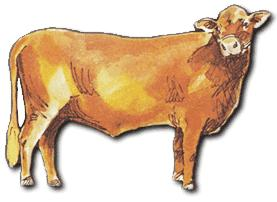
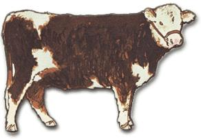
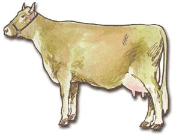
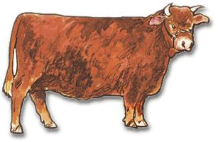
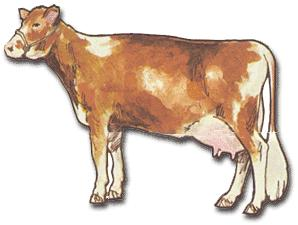
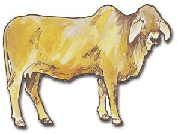
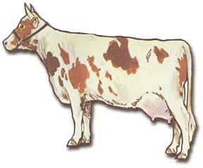
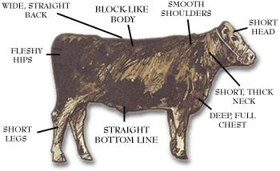
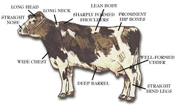

Common Beef And Dairy Cattle Of North America
May/June 1975
BEEF
DAIRY
The animals shown on the left side of this poster are examples of the breeds of beef cattle most commonly raised in the U.S. All have been specially bred to produce large amounts of meat at low cost.
The Santa Gertrudis is a Shorthorn-Brahman cross developed on the King Ranch in Texas and is suited to hot, humid climates. Its tolerance for heat is inherited from the Brahman (or Zebu), a humped breed of Indian origin which thrives in this country's southern coastal regions.
Herefords ("whitefaces") are eager grazers and the most popular American beef breed. The one shown above belongs to the Polled (hornless) strain. The fast-gaining, easily reared Shorthorn also occurs in a polled form. A second variation-the Milking Shorthorn-is raised for both beef and dairy use.
The black Aberdeen-Angus (plain Angus to most of us) is a hornless breed that produces "marbled" beef of very high quality.
Actually, much of the beef marketed in this country comes from dairy cattle: unpromising heifers, unproductive cows, and males not wanted for breeding. Bull calves raised for food are castrated for safer handling and improved meat. Steers of any breed can also be trained as work animals . . . in which case they're called oxen.
Cows of the dairy breeds are shown on the right. The gentle, sensitive Jersey is the smallest in size and yield (two to four gallons a day of rich milk, with a butterfat content of over 5 percent). The calmer golden Guernsey's milk is slightly more abundant and contains somewhat less fat.
The docile Brown Swiss-one of the oldest dairy breeds-gives pure white milk with a high level of non-fat solids, minerals, and lactose . . . excellent for cheesemaking.
Like the Brown Swiss, the long-horned Ayrshire is a fairly heavy producer (between Guernsey and Holstein). It's hardy and thrives in hill country.
The largest and most popular milk cow is the Holstein-Friesian (Holstein in the U.S. and Friesian in Great Britain). She's a placid creature, and her milk contains only 3.7 percent butterfat but is given in great abundance. . . six gallons or more per day.
|
 santa gertrudis |
 jersey |
 hereford |
|
 brown swiss |
 shorthorn |
 guernsey |
|
 brahman |
 ayrshire |
 angus |
|
 holstein |
|
|